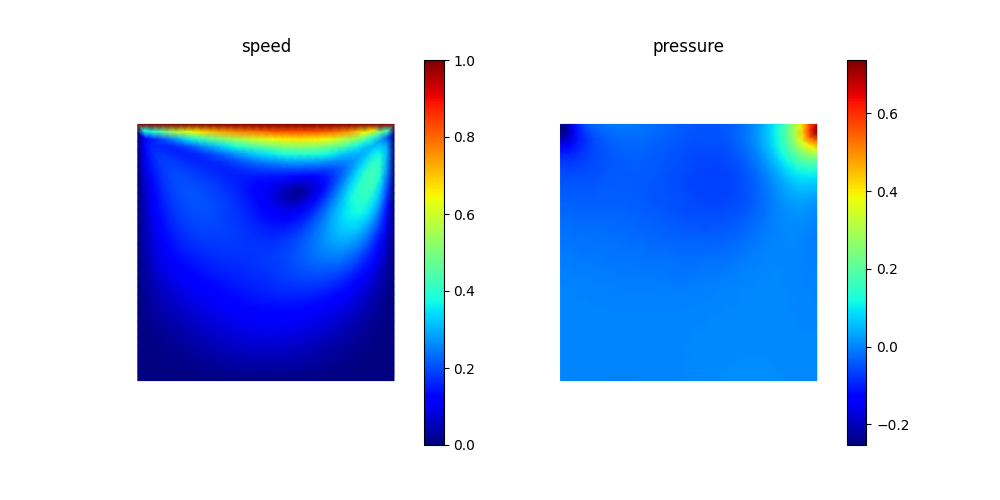
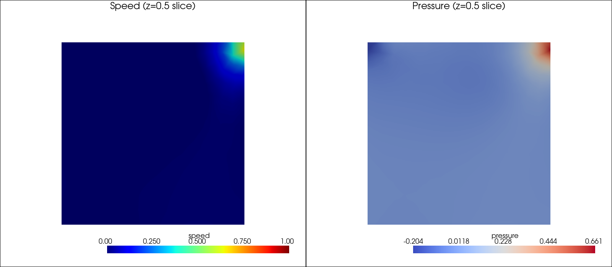

顶盖驱动方腔¶
顶盖驱动方腔是不可压缩纳维-斯托克斯求解器的教科书级基准。其物理过程很简单——一个盛有流体的方腔，顶壁以单位速度滑动，其余壁面满足无滑移条件，无体积力——但在中等雷诺数下，它已经表现出一个主涡以及若干次级角涡，任何合格的求解器都必须能复现这些结构。examples/fluid/cavity/ 中的两个脚本在 \(\mathrm{Re} = 100\) 下求解稳态问题：cavity.py 在三角化的单位正方形上运行，cavity_3d.py 在四面体离散的单位立方体上运行。它们共享同一个维度通用的 NavierStokesAssembler，因此 3D 算例本质上只是换了网格。
小心
TensorMesh 尚未原生支持面向耦合多物理场的混合单元函数空间——目前没有内置的 Taylor-Hood（例如 P2 速度 / P1 压力）速度-压力配对来开箱即用地满足 inf-sup（LBB）条件。因此这些算例对每个场都采用等阶 P1-P1，并借助 SUPG/PSPG 稳定化来恢复稳定性，这也是下面弱形式中带有额外的基于残差的 tau 项的原因。对混合单元以及更紧密的耦合多物理场工作流的原生支持已列入路线图，并将逐步加入；在此之前，请把这里的 NavierStokesAssembler 视为示例级范式，而非稳定的库 API。
问题¶
稳态不可压缩纳维-斯托克斯方程的强形式为
其中 \(\Omega = (0, 1)^d\)、\(\mu = 1/\mathrm{Re}\)、\(\rho = 1\)，边界条件为
顶盖（\(y = 1\)）：\(\mathbf{u} = (1, 0, \dots)\)（运动壁面）
其余壁面：\(\mathbf{u} = \mathbf{0}\)（无滑移）
某一节点：\(p = 0\)（钉定压力以消除零空间）。
弱形式与稳定化¶
标准的混合弱形式将速度与压力一并处理。由于这些脚本对两者都采用等阶 P1-P1 单元，离散 LBB 条件被违反，朴素的伽辽金格式会出现伪压力模态。解决办法是 SUPG/PSPG 稳定化：向动量方程和连续性方程都加入一个基于残差的扰动项，并以依赖网格尺寸的参数 \(\tau\) 进行缩放。
记 \(\mathbf{w} = \mathbf{w}^{n}\) 为上一个 Picard 迭代步的速度。SUPG/PSPG 稳定化弱形式寻求 \(\mathbf{u} \in (H^1_0(\Omega))^d + \mathbf{u}_b\) 和 \(p \in L^2(\Omega)/\mathbb{R}\)，使得对所有 \(\mathbf{v} \in (H^1_0(\Omega))^d, q \in L^2(\Omega)/\mathbb{R}\)，
这里 \(\mathbf{u}_b\) 计入了非齐次的速度边界条件；\(L^2(\Omega)/\mathbb{R}\) 是模去常数后的空间（因为压力只能确定到一个相加常数）。
对于等阶 P1-P1，这一伽辽金形式是不稳定的，因此我们逐单元附加由强动量残差构造的 SUPG/PSPG 项
注意黏性项 \(\mu\,\Delta\mathbf{u}\) 在 P1 单元上为零。该稳定化离散对 \(\mathbf{u}\) 和 \(p\) 都使用 P1-P1 单元，并加入
到上述弱形式中，其中 \(\tau\) 为稳定化参数。
其实现是一个在算例中本地定义的自定义 ElementAssembler。它的 forward 返回耦合一个测试节点与一个试探节点的 \((d{+}1) \times (d{+}1)\) 块——即 \(d\) 个速度分量加上压力——装配器会像内置的向量值装配器那样，将该块印入一个块状 COO 稀疏矩阵。这个块是由四个具名子块而非逐项构造的，因此每个物理项都清晰可见：
class NavierStokesAssembler(ElementAssembler):
def __post_init__(self, rho=1.0, mu=0.01, tau=0.1):
self.rho, self.mu, self.tau = rho, mu, tau
def forward(self, u, v, gradu, gradv, w_prev):
dim = gradu.shape[0]
eye = torch.eye(dim, dtype=gradu.dtype, device=gradu.device)
# velocity-velocity: convection + diffusion + SUPG (diagonal in components)
convection = self.rho * torch.dot(w_prev, gradv) * u
diffusion = self.mu * torch.dot(gradu, gradv)
supg = self.rho * torch.dot(w_prev, gradv) * self.tau * torch.dot(w_prev, gradu)
A_uu = (convection + diffusion + supg) * eye # [dim, dim]
# pressure gradient in momentum (+ PSPG); divergence in continuity (+ PSPG)
B_up = -v * gradu + self.tau * torch.dot(w_prev, gradu) * gradv # [dim]
B_pu = u * gradv + self.tau * self.rho * torch.dot(w_prev, gradv) * gradu # [dim]
C_pp = self.tau * torch.dot(gradv, gradu) # PSPG pressure Laplacian
top = torch.cat([A_uu, B_up.unsqueeze(1)], dim=1) # [dim, dim+1]
bottom = torch.cat([B_pu, C_pp.reshape(1)]).unsqueeze(0) # [1, dim+1]
return torch.cat([top, bottom], dim=0) # [dim+1, dim+1]
这四个具名子块与上面稳定化弱形式中的各项一一对应：
A_uu——对流项 \(\rho\,(\mathbf{w}\cdot\nabla)\mathbf{u}\cdot\mathbf{v}\)、扩散项 \(\mu\,\nabla\mathbf{u}:\nabla\mathbf{v}\)，以及 SUPG 对流项 \(\tau\,(\mathbf{w}\cdot\nabla\mathbf{v})\,\rho\,(\mathbf{w}\cdot\nabla)\mathbf{u}\)（在各分量上是对角的，故乘以* eye）；B_up——压力梯度项 \(-p\,\nabla\cdot\mathbf{v}\) 及其 SUPG 对应项 \(\tau\,(\mathbf{w}\cdot\nabla\mathbf{v})\cdot\nabla p\)；B_pu——散度项 \(q\,\nabla\cdot\mathbf{u}\) 及 PSPG 对流项 \(\tau\,\nabla q\cdot\rho\,(\mathbf{w}\cdot\nabla)\mathbf{u}\)；C_pp——PSPG 压力拉普拉斯项 \(\tau\,\nabla p\cdot\nabla q\)。
由于 dim 是从 gradu.shape[0] 读取的，同一个 forward 在 2D 中产生 \(3{\times}3\) 块、在 3D 中产生 \(4{\times}4\) 块，无需任何改动。
Picard 迭代¶
对流项 \((\mathbf{u}\cdot\nabla)\mathbf{u}\) 通过将上一迭代步的速度 \(\mathbf{w}^{n}\) 作为 w_prev 传给装配器来线性化：
对于中等雷诺数，该过程以几何速率收敛；脚本迭代直到 ||u_new - u_full|| / ||u_new|| < 1e-4，在 Re=100 时通常约需 8 次迭代。
assembler = NavierStokesAssembler.from_mesh(mesh, rho=rho, mu=mu, tau=tau)
condenser = Condenser(bc_mask, bc_val)
for i in range(max_iter):
w_prev = u_full.reshape(-1, n_dof)[:, :2] # previous velocity
K = assembler(points, point_data={"w_prev": w_prev})
f = torch.zeros(n_points * n_dof, dtype=torch.float64)
K_, f_ = condenser(K, f)
u_new = condenser.recover(K_.solve(f_))
diff = torch.norm(u_new - u_full) / (torch.norm(u_new) + 1e-8)
u_full = u_new
if diff < tol:
break
几个需要注意的细节：
自由度排布。未知量以节点为主序交错排列：2D 中为
[u_0, v_0, p_0, u_1, v_1, p_1, …]（3D 中每个节点为[u, v, w, p]）。脚本中小巧的component_dofs(n_points, n_dof, comp)辅助函数将“每个节点上的分量comp”转换为Condenser掩码所需的扁平全局索引。压力钉定。
bc_mask[n_dof - 1] = True将节点 0 处的压力钉定为零——这是必要的，因为不可压缩流动中压力只能确定到一个相加常数。w_prev通过point_data按名称传入，并作为同名关键字参数到达forward；分发约定参见 形式。
{kind=link}

图 47 cavity.py 在 Re = 100 时的输出。左：速度大小 \(\|u\|\)——运动顶盖将流体拖向右上方，再沿右壁向下扫掠，形成主涡。右：压力场，在顶盖与壁面相撞滞止的右上角出现特征性的高压区。¶
扩展到 3D——cavity_3d.py¶
cavity_3d.py 在单位立方体上求解相同的物理问题。由于 NavierStokesAssembler 是维度通用的，二者的差异都很机械：
Mesh.gen_cube(chara_length=…)（四面体）取代了Mesh.gen_rectangle。自由度排布变为每个节点
[u, v, w, p]（n_dof = 4），而不再是[u, v, p]；w_prev现在切取前三个分量。输出为体数据：供 ParaView 使用的
cavity_3d.vtu，外加一张在 \(z = 0.5\) 处的横截面切片，由 PyVista 渲染为cavity_3d.png。
其余一切——Picard 循环、SUPG/PSPG 印块、压力钉定、Condenser 的使用——都保持不变：
mesh = Mesh.gen_cube(chara_length=chara_length).double()
n_dof = 4 # [u, v, w, p] per node
assembler = NavierStokesAssembler.from_mesh(mesh, rho=rho, mu=mu, tau=tau)
condenser = Condenser(bc_mask, bc_val)
for i in range(max_iter):
w_prev = u_full.reshape(-1, n_dof)[:, :3] # 3D velocity
K = assembler(mesh.points, point_data={"w_prev": w_prev})
f = torch.zeros(n_points * n_dof, dtype=torch.float64)
K_, f_ = condenser(K, f)
u_full = condenser.recover(K_.solve(f_))
每个节点 4 个自由度的排布会让线性系统迅速增大——在 chara_length=0.05 时约有百万级未知量——因此一旦节点数超过几千，建议使用 GPU 后端（backend="cudss" 或 "pytorch"，参见 稀疏求解器）。
{kind=link}

图 48 cavity_3d.py 的输出：穿过立方体的 \(z=0.5\) 中平面切片上的速度大小（左）与压力（右）。流动形态在顶盖附近与 2D 解吻合，但向前后壁面方向衰减，因此中平面表现出比严格 2D 情形更弱的回流。完整的 3D 场被写入供 ParaView 使用的 cavity_3d.vtu。¶
运行方式¶
cd examples/fluid/cavity
python cavity.py # 2D, writes cavity_results.png
python cavity_3d.py # 3D, writes cavity_3d.vtu and cavity_3d.png
控制台会报告每个 Picard 步的相对残差以及最终的收敛信息。对于 2D，可将流函数等值线与 Ghia / Ghia / Shin（1982）在 Re=100 下的参考结果作定性比较——主涡中心应在百分之几的误差内吻合。对于 3D，可在 ParaView 中打开 cavity_3d.vtu 进行完整的体数据检查（流线、等值面）；PNG 仅作快速合理性检查之用。
下一步¶
圆柱绕流（涡脱落）——加入瞬态时间推进。
泰勒-格林涡（收敛性研究）——同一系列的装配器，此处用于与精确解作定量收敛性研究。
形式——向量值
forward返回值的参数分发约定。稀疏求解器——针对更大的 3D 系统的后端选择。